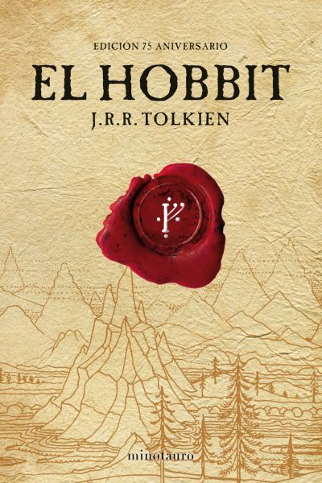

New Books
On the eve of a snowstorm, one Friday behind the pirate galleon bar of a hidden bar, a bartender fresh from the Loire awaits the arrival of Kate, the girl with the extraordinary floating hair and the very long scarves.
As fate would have it, Amanda and Nate, two people who can't stand each other, get involved in a fake relationship, pretending to be sweethearts. Pretending love.
On the eve of their tenth birthday, three boys meet to camp in the woods surrounding Hawkins Hollow. Their destination is the Pagan Stone where they perform a blood brother ritual that will cement their eternal friendship. When their three drops of blood unite on the Pagan Stone a powerful demon that has been hidden for centuries reappears.
Old Books
Harry Potter and the Cursed Legacy is about Albus' childhood journey and the roles he and his best friend, Scorpius (son of Draco Malfoy), play when dark forces, possibly in league with Voldemort, once again threaten the fate of the planet.
Like fire in ice, is a novel that from its first lines draws our attention and immerses us in situations where honor is the most important thing, so in it, we will appreciate the celebration of a duel. In this article we present a brief summary of the work.
The Odyssey is one of two major ancient Greek epic poems attributed to Homer. It is one of the oldest extant works of literature still widely read by modern audiences. As with the Iliad, the poem is divided into 24 books. It follows the Greek hero Odysseus, king of Ithaca , and his journey home after the Trojan War .
Recomendations
The Diary of Anne Frank. Anne’s diary begins on her thirteenth birthday, June 12, 1942, and ends shortly after her fifteenth. At the start of her diary, Anne describes fairly typical girlhood experiences, writing about her friendships with other girls, her crushes on boys, and her academic performance at school.
